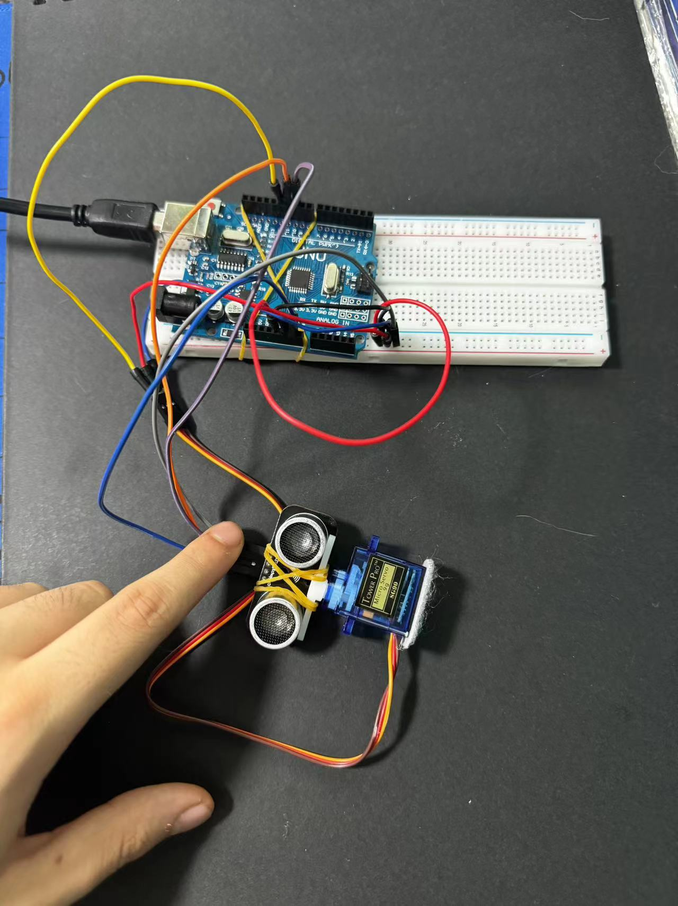
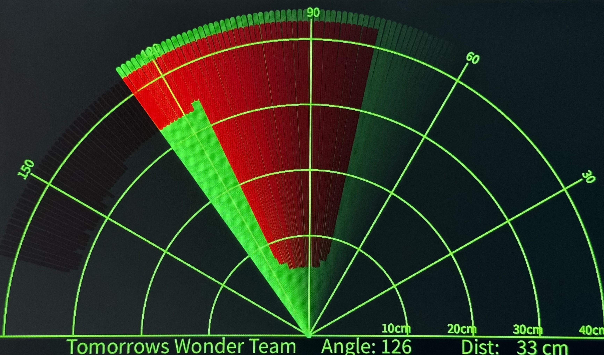

Interface application programming
Processing
Introduction
Processing is a flexible software sketchbook and a language for learning how to code within the context of the visual arts. Since 2001, Processing has promoted software literacy within the visual arts and visual literacy within technology. There are tens of thousands of students, artists, designers, researchers, and hobbyists who use Processing for learning and prototyping. Processing is a free graphical library and integrated development environment (IDE) built for the electronic arts, new media art, and visual design communities with the purpose of teaching non-programmers the fundamentals of computer programming in a visual context.Processing uses the Java language, with additional simplifications such as additional classes and aliased mathematical functions and operations. It also provides a graphical user interface for simplifying the compilation and execution stage. The Processing language and IDE have been the precursor to other projects including Arduino and Wiring.
• After installing open Processing for coding
• In Sketch tab write code and run the program to show the output
Key Features
Ease of Use: Processing was designed to make it straightforward to start with programming for visual creation. It's a great introductory system for those without much prior programming experience.
Java-based: The Processing language builds on the Java language, but uses a simplified syntax and graphics programming model.
IDE: Processing comes with its own integrated development environment (IDE), which includes a code editor, a console, and a display window to showcase the visual output.
Community and Libraries: It has a large community and a wide range of libraries that extend its capabilities for sound, video, hardware interaction, and more.
Export: It allows users to export their creations as standalone applications or as Java applets for embedding in web pages (though support for Java applets has largely been dropped in modern web browsers).
Similar Softwares
p5.js: is a JavaScript library that is similar to Processing in terms of syntax and functionality. It is designed for web-based graphics and interactive media, and can be used to create dynamic visualizations and interactive user interfaces. p5.js is often used in creative coding and web development, and is well-suited for projects that involve real-time data, user input, and web APIs.
OpenFrameworks: is an open-source C++ toolkit that is similar to Processing in terms of its emphasis on creative coding and multimedia applications. It provides a collection of libraries and tools for working with graphics, audio, video, and other media, and is well-suited for projects that require low-level control and performance optimization. OpenFrameworks can be used to create interactive installations, virtual and augmented reality experiences, and other multimedia applications.
TouchDesigner: is a node-based visual programming environment that is similar to Processing in terms of its emphasis on real-time graphics and interactive media. It is designed for creating interactive installations, live performances, and immersive experiences, and can be used to create dynamic visualizations and interactive interfaces. TouchDesigner provides a wide range of tools for working with graphics, video, audio, and sensors, and is well-suited for projects that require advanced multimedia integration and real-time control.
Vvvv: is a graphical programming environment for easy prototyping and development. It is designed to facilitate the handling of large media environments with physical interfaces, real-time motion graphics, audio and video that can interact with many users simultaneously.
Unity: is a versatile game development engine that enables developers to create 2D and 3D games for various platforms using languages like C#. It provides features like a powerful graphics engine, physics simulation, an asset store, and support for VR/AR development. Unity is widely used in the game development industry due to its flexibility and active community support.
References
Nexmaker
Learning Processing
OpenProcessing
Processing Demo
Mouse Interaction: Run the program to display a 2D grid of boxes with three different kinds of lights.

/**
* Mixture Grid
* modified from an example by Simon Greenwold.
*
* Display a 2D grid of boxes with three different kinds of lights.
*/
void setup() {
size(640, 360, P3D);
noStroke();
}
void draw() {
defineLights();
background(0);
for (int x = 0; x <= width; x += 60) {
for (int y = 0; y <= height; y += 60) {
pushMatrix();
translate(x, y);
rotateY(map(mouseX, 0, width, 0, PI));
rotateX(map(mouseY, 0, height, 0, PI));
box(90);
popMatrix();
}
}
}
void defineLights() {
// Orange point light on the right
pointLight(150, 100, 0, // Color
200, -150, 0); // Position
// Blue directional light from the left
directionalLight(0, 102, 255, // Color
1, 0, 0); // The x-, y-, z-axis direction
// Yellow spotlight from the front
spotLight(255, 255, 109, // Color
0, 40, 200, // Position
0, -0.5, -0.5, // Direction
PI / 2, 2); // Angle, concentration
}
Reference:
Mixture grid
Processing Minigame
1. Shooting Game
Run the program to start the game immediately, use the mouse to shoot bullets toward enemies to get scores.
ArrayList<Bullet> bullets = new ArrayList<Bullet>();
ArrayList<Enemy> enemies = new ArrayList<Enemy>();
int score = 0;
int tickCounter = 0;
void setup() {
noCursor();
size(1200, 1400);
}
void draw() {
background(0, 10, 60);
createGameElements();
updateBullets();
updateEnemies();
renderPlayer();
renderScore();
tickCounter = (tickCounter + 1) % 10000;
}
void createGameElements() {
if (tickCounter % 5 == 0) createBullet(mouseX, mouseY);
if (tickCounter % 10 == 0) createEnemy();
}
void updateBullets() {
for (int i = bullets.size()-1; i >= 0; i--) {
Bullet bullet = bullets.get(i);
bullet.y -= bullet.speed;
if (bullet.y < 0) {
bullets.remove(i);
continue;
}
boolean hitFlag = checkBulletEnemyCollision(bullet);
if (hitFlag) {
bullets.remove(i);
score += 100;
}
renderBullet(bullet.x, bullet.y, hitFlag);
}
}
boolean checkBulletEnemyCollision(Bullet bullet) {
for (int j = enemies.size()-1; j >= 0; j--) {
Enemy enemy = enemies.get(j);
if (
abs(bullet.x - enemy.x) < enemy.width / 2 &&
abs(bullet.y - enemy.y) < enemy.height / 2
) {
enemies.remove(j);
createEnemy();
return true;
}
}
return false;
}
void updateEnemies() {
for (int i = enemies.size()-1; i >= 0; i--) {
Enemy enemy = enemies.get(i);
enemy.x += enemy.moveX;
enemy.y += enemy.moveY;
if (enemy.x < 0 || enemy.x > width || enemy.y > height) {
enemies.remove(i);
}
renderEnemy(enemy.x, enemy.y, enemy.colorR, enemy.colorG, enemy.colorB);
}
}
void renderBullet(float x, float y, boolean hitFlag) {
fill(hitFlag ? color(255, 0, 0) : 255);
ellipse(x, y, 6, 8);
}
void renderEnemy(float x, float y, float r, float g, float b) {
fill(r, g, b);
ellipse(x, y, 50, 50);
}
void renderPlayer() {
fill(255);
ellipse(mouseX, mouseY, 20, 20);
}
void renderScore() {
fill(255, 0, 0);
textSize(30);
text("Score: " + score, 10, 30);
}
void createBullet(float mouseX, float mouseY) {
bullets.add(new Bullet(mouseX, mouseY));
}
void createEnemy() {
float x = random(width);
float moveX = random(-6, 6);
float moveY = random(1, 5);
float colorR = random(255);
float colorG = random(255);
float colorB = random(255);
enemies.add(new Enemy(x, 0, moveX, moveY, colorR, colorG, colorB));
}
class Bullet {
float x, y;
float speed = 10;
Bullet(float x, float y) {
this.x = x;
this.y = y;
}
}
class Enemy {
float x, y;
float moveX, moveY;
float colorR, colorG, colorB;
float width = 50, height = 50;
Enemy(float x, float y, float moveX, float moveY, float colorR, float colorG, float colorB) {
this.x = x;
this.y = y;
this.moveX = moveX;
this.moveY = moveY;
this.colorR = colorR;
this.colorG = colorG;
this.colorB = colorB;
}
}
2. Avoid Blocks Game
Run the program to start the game immediately, use the mouse to avoid the rocks falling from up to get scores.
PImage img;
int playerXCor = 600;
int playerYCor = 590;
int playerWidth = 55;
int playerHeight = 55;
int difficulty = 10;
int limit = 10;
float score = 0;
Baddie[] baddies;
boolean isCollided = false;
void initBaddies(int xMin, int xMax, int yMin, int yMax, int num){
baddies = new Baddie[num];
for(int i = 0; i < baddies.length; i++){
int x = (int)random(xMin, xMax);
int y = (int)random(yMin, yMax);
baddies[i] = new Baddie(x, y, 30, 15);
}
}
// In a program that has the setup() function, the size()
//fullscreen() function must be the first line of code inside setup(),
and the setup() function must appear in the code tab with the same name as your sketch folder.
void setup(){
//fullScreen();
size(1280,720);
//rameRate(60);
img = loadImage("bg.png");
initBaddies(-100, width + 20, -250, -80, difficulty);
}
void draw(){
image(img,0,0); // Using instead of background();
drawPlayer();
if(!isCollided){
moveBaddies();
if(score > limit && score < limit + 2){
initBaddies(-100, width + 20, -260, -80, difficulty); difficulty += 10; limit += 20;
}
}
else{
text("Score: "+(int)score,100, 100);
}
}
void moveBaddies(){
for(int i = 0; i < baddies.length; i++){
if(baddies[i].yCor > height){
baddies[i].yCor = -10;
}
baddies[i].display();
baddies[i].drop(random(1, 15));
boolean conditionXLeft = baddies[i].xCor + baddies[i].w >= playerXCor;
boolean conditionXRight = baddies[i].xCor + baddies[i].w <= playerXCor + playerWidth + 4;
boolean conditionUp = baddies[i].yCor >= playerYCor;
boolean conditionDown = baddies[i].yCor + baddies[i].h <= playerYCor + playerHeight;
if(conditionXLeft && conditionXRight && conditionUp && conditionDown){
isCollided = true;
}
}
score += 0.1;
fill(0, 102, 153);
text("Score: "+(int)score, 10, 40);
textSize(25);
}
void drawPlayer(){
stroke(204, 132, 0);
strokeWeight(4);
fill(204, 102, 0);
rect(playerXCor, playerYCor, playerWidth, playerHeight, 7);
}
void mouseDragged(){
if(mouseX >= 0 && mouseX <= width - playerWidth + 1){
playerXCor = mouseX;
}
if(mouseY >= 590 && mouseY <= height - playerHeight){
playerYCor = mouseY;
}
}
class Baddie{
public int xCor;
public int yCor;
public int w;
public int h;
Baddie(int xVal, int yVal, int wVal, int hVal){
xCor = xVal;
yCor = yVal;
w = wVal;
h = hVal;
}
public void drop(float speed){
yCor += speed;
}
public void display(){
fill(0, 102, 0);
rect(xCor, yCor,w,h,5);
}
}
Reference:
https://www.youtube.com/watch?v=Ew4V8CM6qvQ
https://github.com/SkChishty/Coding_For_Kids___Avoid_Blocks
Processing with Arduino

Material used are:
Sonar:
VCC-5V
GND-Ground
Trig-Pin10
Echo-pin11
Circuit Diagram

Arduino code:
// Includes the Servo library
#include <Servo.h>.
// Defines Tirg and Echo pins of the Ultrasonic Sensor
const int trigPin = 10;
const int echoPin = 11;
// Variables for the duration and the distance
long duration;
int distance;
Servo myServo; // Creates a servo object for controlling the servo motor
void setup() {
pinMode(trigPin, OUTPUT); // Sets the trigPin as an Output
pinMode(echoPin, INPUT); // Sets the echoPin as an Input
Serial.begin(9600);
myServo.attach(12); // Defines on which pin is the servo motor attached
}
void loop() {
// rotates the servo motor from 15 to 165 degrees
for(int i=15;i<=165;i++){
myServo.write(i);
delay(30);
distance = calculateDistance();// Calls a function for calculating the distance measured by
the Ultrasonic sensor for each degree
Serial.print(i); // Sends the current degree into the Serial Port
Serial.print(","); // Sends addition character right next to the previous value needed later
in the Processing IDE for indexing
Serial.print(distance); // Sends the distance value into the Serial Port
Serial.print("."); // Sends addition character right next to the previous value needed later
in the Processing IDE for indexing
}
// Repeats the previous lines from 165 to 15 degrees
for(int i=165;i>15;i--){
myServo.write(i);
delay(30);
distance = calculateDistance();
Serial.print(i);
Serial.print(",");
Serial.print(distance);
Serial.print(".");
}
}
// Function for calculating the distance measured by the Ultrasonic sensor
int calculateDistance(){
digitalWrite(trigPin, LOW);
delayMicroseconds(2);
// Sets the trigPin on HIGH state for 10 micro seconds
digitalWrite(trigPin, HIGH);
delayMicroseconds(10);
digitalWrite(trigPin, LOW);
duration = pulseIn(echoPin, HIGH); // Reads the echoPin, returns the sound wave travel time in
microseconds
distance= duration*0.034/2;
return distance;
}
Processing code:
import processing.serial.*; // imports library for serial communication
import java.awt.event.KeyEvent;
// imports library for reading the data from the serial port
import java.io.IOException;
Serial myPort; // defines Object Serial
// defubes variables
String angle="";
String distance="";
String data="";
String noObject;
float pixsDistance;
int iAngle, iDistance;
int index1=0;
int index2=0;
PFont orcFont;
void setup() {
size (1200, 700); // ***CHANGE THIS TO YOUR SCREEN RESOLUTION***
smooth();
myPort = new Serial(this,"COM4", 9600); // starts the serial communication
myPort.bufferUntil('.');
// reads the data from the serial port up to the character '.'.
So actually it reads this: angle,distance.
}
void draw() {
fill(98,245,31);
// simulating motion blur and slow fade of the moving line
noStroke();
fill(0,4);
rect(0, 0, width, height-height*0.065);
fill(98,245,31); // green color
// calls the functions for drawing the radar
drawRadar();
drawLine();
drawObject();
drawText();
}
void serialEvent (Serial myPort) {
// starts reading data from the Serial Port
// reads the data from the Serial Port up to the character '.'
and puts it into the String variable "data".
data = myPort.readStringUntil('.');
data = data.substring(0,data.length()-1);
index1 = data.indexOf(",");
// find the character ',' and puts it into the variable "index1"
angle= data.substring(0, index1);
// read the data from position "0" to position of the variable index1 or
thats the value of the angle the Arduino Board sent into the Serial Port
distance= data.substring(index1+1, data.length());
// read the data from position "index1" to the end of the data pr thats the
value of the distance
// converts the String variables into Integer
iAngle = int(angle);
iDistance = int(distance);
}
void drawRadar() {
pushMatrix();
translate(width/2,height-height*0.074);
// moves the starting coordinats to new location
noFill();
strokeWeight(2);
stroke(98,245,31);
// draws the arc lines
arc(0,0,(width-width*0.0625),(width-width*0.0625),PI,TWO_PI);
arc(0,0,(width-width*0.27),(width-width*0.27),PI,TWO_PI);
arc(0,0,(width-width*0.479),(width-width*0.479),PI,TWO_PI);
arc(0,0,(width-width*0.687),(width-width*0.687),PI,TWO_PI);
// draws the angle lines
line(-width/2,0,width/2,0);
line(0,0,(-width/2)*cos(radians(30)),(-width/2)*sin(radians(30)));
line(0,0,(-width/2)*cos(radians(60)),(-width/2)*sin(radians(60)));
line(0,0,(-width/2)*cos(radians(90)),(-width/2)*sin(radians(90)));
line(0,0,(-width/2)*cos(radians(120)),(-width/2)*sin(radians(120)));
line(0,0,(-width/2)*cos(radians(150)),(-width/2)*sin(radians(150)));
line((-width/2)*cos(radians(30)),0,width/2,0);
popMatrix();
}
void drawObject() {
pushMatrix();
translate(width/2,height-height*0.074);
// moves the starting coordinats to new location
strokeWeight(9);
stroke(255,10,10); // red color
pixsDistance = iDistance*((height-height*0.1666)*0.025);
// covers the distance from the sensor from cm to pixels
// limiting the range to 40 cms
if(iDistance<40){
// draws the object according to the angle and the distance
line(pixsDistance*cos(radians(iAngle)),-pixsDistance*sin(radians(iAngle)),
(width-width*0.505)*cos(radians(iAngle)),
-(width-width*0.505)*sin(radians(iAngle)));
}
popMatrix();
}
void drawLine() {
pushMatrix();
strokeWeight(9);
stroke(30,250,60);
translate(width/2,height-height*0.074);
// moves the starting coordinats to new location
line(0,0,(height-height*0.12)*cos(radians(iAngle)),
-(height-height*0.12)*sin(radians(iAngle)));
// draws the line according to the angle
popMatrix();
}
void drawText() { // draws the texts on the screen
pushMatrix();
if(iDistance>40) {
noObject = "Out of Range";
}
else {
noObject = "In Range";
}
fill(0,0,0);
noStroke();
rect(0, height-height*0.0648, width, height);
fill(98,245,31);
textSize(25);
text("10cm",width-width*0.3854,height-height*0.0833);
text("20cm",width-width*0.281,height-height*0.0833);
text("30cm",width-width*0.177,height-height*0.0833);
text("40cm",width-width*0.0729,height-height*0.0833);
textSize(40);
text("Tomorrows Wonder Team ", width-width*0.875, height-height*0.0277);
text("Angle: " + iAngle +" ", width-width*0.48, height-height*0.0277);
text("Dist:", width-width*0.26, height-height*0.0277);
if(iDistance<40) {
text(" " + iDistance +" cm", width-width*0.225, height-height*0.0277);
}
textSize(25);
fill(98,245,60);
translate((width-width*0.4994)+width/2*cos(radians(30)),
(height-height*0.0907)-width/2*sin(radians(30)));
rotate(-radians(-60));
text("30 ",0,0);
resetMatrix();
translate((width-width*0.503)+width/2*cos(radians(60)),
(height-height*0.0888)-width/2*sin(radians(60)));
rotate(-radians(-30));
text("60 ",0,0);
resetMatrix();
translate((width-width*0.507)+width/2*cos(radians(90)),
(height-height*0.0833)-width/2*sin(radians(90)));
rotate(radians(0));
text("90 ",0,0);
resetMatrix();
translate(width-width*0.513+width/2*cos(radians(120)),
(height-height*0.07129)-width/2*sin(radians(120)));
rotate(radians(-30));
text("120 ",0,0);
resetMatrix();
translate((width-width*0.5104)+width/2*cos(radians(150)),
(height-height*0.0574)-width/2*sin(radians(150)));
rotate(radians(-60));
text("150 ",0,0);
popMatrix();
}

Building a GUI for Temperature and Humidity Monitoring
Introduction
This project focuses on creating a Graphical User Interface (GUI) in Processing to display temperature and humidity data obtained from an Arduino board equipped with a DHT sensor. The primary goal is to visually represent real-time environmental data. The essential components for this project include an Arduino board, a DHT sensor, and the Processing software. The Arduino interfaces with the DHT sensor to gather data, which is then transmitted to the Processing application. Here, a GUI is developed to showcase the temperature and humidity readings pictorially. The Processing sketch requires customization to specify your serial port and baud rate settings. Once the Arduino is programmed and connected to a computer, the Processing application visualizes the environmental conditions using graphical elements. The "meter" library in Processing is utilized to create an intuitive graphical interface. This project encompasses both hardware assembly and software development, with resources provided to guide through each step.
Hardware Requirements:
Software Requirements:
Technical Specifications of DHT11:
Configuration of DHT Sensor Pins:

Illustration of Component Connections:
.jpg)
Hardware Setup:
To configure the hardware, connect the DHT sensor to the Arduino as per the provided schematic diagram. After hardware assembly, program the Arduino to read data from the sensor. Subsequently, create a GUI in Processing to display the temperature and humidity readings via Arduino's serial port. Installation of the "meter" library in Processing is straightforward, achievable through the library manager. The provided code scripts for Arduino and Processing are designed to display temperature and humidity readings instantly. This project is accessible even for those with basic coding knowledge, with step-by-step instructions available in the resources.
Arduino Code Implementation:


 Arduino Code:
Arduino Code:
#include "DHT.h"
#define DHTPIN 2 //connect DHT data pin to D2
#define DHTTYPE DHT11 // DHT 11
DHT dht(DHTPIN, DHTTYPE);
float temp = 0;
float hum = 0;
void setup() {
Serial.begin(9600);
pinMode(DHTPIN, OUTPUT);
dht.begin(); //This line for get data from sensor
}
void loop() {
temp = dht.readTemperature();
hum = dht.readHumidity();
Serial.print(temp);
Serial.print(",");
Serial.print(hum);
delay(1000);
}
Processing Code Implementation:

 Processing Code:
Processing Code:
// Import Meter library
import meter.*;
// Import serial library
import processing.serial.*;
Serial port; // Define a port for getting data
Meter Tm, Hm; //Create 2 meter for Temperature and Humadity
void setup(){
// Create window for GUI
size(1000, 500); // Size of the window (width, height)
background(0,0,0); // BG-Color of window (R,G,B)
// declare the port as your Arduino port to help get data
port = new Serial(this, "COM4", 9600); //name of the port would be different for every device
// TEMPERATURE METER
Tm = new Meter(this, 50, 150); //x and y coordinates of meter's upper left corner
Tm.setTitleFontSize(20);
Tm.setTitleFontName("Arial bold");
Tm.setTitle("Temperature (C)");
// Change meter scale values
String[] scaleLabels = {"0", "5", "10", "15", "20", "25", "30", "35", "40", "45", "50"};
Tm.setScaleLabels(scaleLabels);
Tm.setScaleFontSize(16);
Tm.setScaleFontName("Times new roman bold");
Tm.setScaleFontColor(color(175,0,42));
// We can also display the value of meter
Tm.setDisplayDigitalMeterValue(true);
// Lets do some more modifications so our meter looks nice
Tm.setArcColor(color(230,0,0));
Tm.setArcThickness(10);
Tm.setMaxScaleValue(60);
Tm.setMinInputSignal(0);
Tm.setMaxInputSignal(60);
Tm.setNeedleThickness(1);
// HUMIDITY METER
// lets take some refference from first meter
int mx = Tm.getMeterX(); // x coordinate of Hm
int my = Tm.getMeterY(); // y coordinate of Hm
int mw = Tm.getMeterWidth();
Hm = new Meter(this, mx + mw + 20, my);
Hm.setTitleFontSize(20);
Hm.setTitleFontName("Arial bold");
Hm.setTitle("Humidity (%)");
// Change meter scale values
String[] scaleLabels2 = {"0", "10", "20", "30", "40", "50", "60", "70", "80", "90", "100"};
Hm.setScaleLabels(scaleLabels2);
Hm.setScaleFontSize(16);
Hm.setScaleFontName("Times new roman bold");
Hm.setScaleFontColor(color(153,0,26));
//display the value of meter
Hm.setDisplayDigitalMeterValue(true);
// This code will modify the default Meter design
Hm.setArcColor(color(255,215,0));
Hm.setArcThickness(10);
Hm.setMaxScaleValue(100);
Hm.setMinInputSignal(1);
Hm.setMaxInputSignal(100);
Hm.setNeedleThickness(1);
}
void draw() {
textSize(30); //Title for our window
fill(211,33,45); // Title font color (r,g,b)
text("Temperature and Humidity", 300, 100); // ("text", x-cordinate, y-cordinate)
if (port.available() > 2) {
String val = port.readString(); // read incoming string data on the serial port
// First, split the temp and hum data
String[] list = split(val, ','); // splits value separated by ','
// Check if the array has at least two elements [Temp & Hum Data]
if (list.length >= 2) {
float temp = float(list[0]); // first value is Temperature
float hum = float(list[1]); // second value is Humidity
//updateMeter accepts only int values so convert data float to int
Tm.updateMeter(int(temp)); // update temparature on Meter
Hm.updateMeter(int(hum)); // update Humadity on Meter
println("Temperature: " + temp + " °C " + "Humidity: " + hum + "%");
delay(1000);
} else {
println("Error: Not enough values received"); // somehow the sensor is unable to read data or send data to meter
}
}
}
Hardware Assembly:

Connecting to a Computer:
After assembling the hardware, connect the Arduino device to a laptop or desktop using a USB cable.
Running the Code:


Practical Demonstration:
References:
https://www.nexmaker.com/https://www.hackster.io/
Kinect:
The Kinect is a line of motion sensing input devices developed by Microsoft. The technology was first introduced with the release of the Xbox 360 in 2010, and later versions were designed for the Xbox One and Windows PCs. The Kinect sensor uses a combination of cameras and microphones to track the movements and gestures of users, allowing for a more interactive and immersive experience in gaming and other applications.
Key features of the Kinect include:
- Depth Sensing: The Kinect uses infrared sensors to create a 3D map of the environment and track the depth of objects and people within its field of view. This enables it to distinguish between different objects and recognize gestures in three-dimensional space.
- Motion Tracking: The device can track the movements of up to six people simultaneously. It recognizes joint positions and skeletal movements, allowing for a more natural and intuitive form of interaction with games and applications.
- Voice Recognition: The Kinect includes a microphone array for voice recognition. Users can control their Xbox or interact with applications using voice commands, providing a hands-free experience.
- Facial Recognition: Some versions of the Kinect have facial recognition capabilities, allowing the device to identify users and customize their experience based on individual profiles.
- Applications Beyond Gaming: While the Kinect was initially designed for gaming, developers have explored various applications beyond the gaming industry. These include virtual reality experiences, medical applications, education, and art installations.
- Discontinuation: Despite its innovative features, the Kinect faced challenges in gaining widespread adoption. In 2017, Microsoft announced the discontinuation of the Kinect for Xbox One, signaling a shift in focus away from motion-based gaming. The Windows version also faced a similar fate.
- Legacy: The Kinect has left a lasting impact on the development of motion-sensing technology. Some of its features, such as depth sensing and gesture recognition, have been integrated into other devices and applications.
While the Kinect may no longer be a prominent feature in Microsoft's gaming strategy, its influence on the development of interactive technologies and its use in various non-gaming applications have contributed to the evolution of user interfaces and human-computer interaction.
Leapmotion:
Leap Motion is a technology company that developed a gesture-based motion control system, also called Leap Motion. Unlike the Kinect, which relies on a combination of cameras and sensors to track the entire body in a three-dimensional space, Leap Motion is specifically designed for precise hand and finger tracking in a smaller area.
Here are some key aspects of Leap Motion:
- Hand and Finger Tracking: Leap Motion uses optical sensors and infrared light to track the movement of hands and fingers with high precision. It is capable of detecting individual fingers, their movements, and gestures, allowing for detailed and accurate input.
- Compact Design: Leap Motion's hardware is compact and can be easily attached to a computer or integrated into other devices, such as virtual reality headsets. This design choice makes it suitable for a variety of applications, including virtual reality (VR) and augmented reality (AR).
- Applications in VR/AR: One of the primary use cases for Leap Motion is in virtual and augmented reality environments. By accurately tracking hand and finger movements, Leap Motion enhances the immersive experience by allowing users to interact with virtual objects using natural hand gestures.
- Gesture Recognition: Leap Motion includes sophisticated algorithms for gesture recognition. This enables users to control applications and perform actions by making specific hand movements or gestures. Developers can integrate these gestures into their applications for intuitive user interaction.
- Open Platform: Leap Motion provides an open platform that encourages developers to create applications and experiences using their technology. This has led to a variety of innovative uses, from virtual sculpting and design applications to educational tools and medical simulations.
- Challenges: While Leap Motion offered innovative technology, it faced challenges in achieving widespread consumer adoption. The market for gesture-based control systems has been competitive, and other technologies like hand tracking integrated directly into VR headsets have gained popularity.
- Focus on Enterprise: Leap Motion shifted its focus towards enterprise and professional applications. This includes areas such as training simulations, medical visualization, and industrial design, where precise hand and finger tracking can be particularly beneficial.
- Acquisition: In mid-2019, Leap Motion was acquired by Ultrahaptics, a company specializing in haptic feedback technology. The merged entity is known as Ultraleap, combining Leap Motion's hand tracking capabilities with Ultrahaptics' expertise in tactile feedback.
Leap Motion's technology, although it may not have achieved the same level of mainstream success as some other input devices, has made significant contributions to the field of natural user interfaces and has inspired further development in the areas of gesture-based control and virtual interaction.